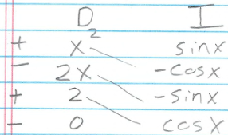

Least Squares Examples - sin(x)
Thomas J. Kennedy
Do you remember $f(x) = \sin(x)$? I want to use more than 3 points to approximate $0 \leq x \leq \pi$.
1 Getting Started
We must use the $Ac = b$ method:
$$ \left[\begin{array}{ccc} \int\limits_{x=0}^{\pi} \pi_{0} \pi_{0} dx & \int\limits_{x=0}^{\pi} \pi_{0} \pi_{1}dx & \int\limits_{x=0}^{\pi} \pi_{0} \pi_{2} dx\\ \int\limits_{x=0}^{\pi} \pi_{1} \pi_{0} dx & \int\limits_{x=0}^{\pi} \pi_{1} \pi_{1}dx & \int\limits_{x=0}^{\pi} \pi_{1} \pi_{2} dx\\ \int\limits_{x=0}^{\pi} \pi_{2} \pi_{0} dx & \int\limits_{x=0}^{\pi} \pi_{2} \pi_{1}dx & \int\limits_{x=0}^{\pi} \pi_{2} \pi_{2} dx\\ \end{array}\right] \left[\begin{array}{c} c_0 \\ c_1 \\ c_2 \\ \end{array}\right] = \left[\begin{array}{c} \int\limits_{x=0}^{\pi} \pi_0 f dx\\ \int\limits_{x=0}^{\pi} \pi_1 f dx\\ \int\limits_{x=0}^{\pi} \pi_2 f dx\\ \end{array}\right] $$
Note how $A$ is a 3-by-3 matrix. We have three constants to compute (i.e., $c_0, c_1, c_2$).
$$ \hat{\varphi} = c_0 \pi_0 + c_1 \pi_1 + c_2 \pi_2 $$
Since we need a polynomial of degree 2, our basis functions are:
- $\pi_0 = 1$
- $\pi_1 = x$
- $\pi_2 = x^2$
which leads us to
$$ \hat{\varphi} = c_0 + c_1 x + c_2 x^2 $$
2 Some Calculus
We have twelve integrals to solve. Let us start with the nine (9) from $A$.
$$ \begin{array}{lccc} \pi_{0} \pi_{0} &=& 1 * 1 &\rightarrow& \int\limits_{0}^{\pi} dx &=& x \big|_{0}^{\pi} &=& \pi \\ \pi_{0} \pi_{1} &=& 1 * x &\rightarrow& \int\limits_{0}^{\pi} x dx &=& \frac{1}{2}x^2 \big|_{0}^{\pi} &=& \frac{\pi^2}{2} \\ \pi_{0} \pi_{2} &=& 1 * x^2 &\rightarrow& \int\limits_{0}^{\pi} x^{2} dx &=& \frac{1}{3}x^3 \big|_{0}^{\pi} &=& \frac{\pi^3}{3} \\ \pi_{1} \pi_{0} &=& \pi_0 \pi_1 &\rightarrow& \ldots &=& \ldots &=& \frac{\pi^2}{2} \\ \pi_{1} \pi_{1} &=& x * x &\rightarrow& \int\limits_{0}^{\pi} x^2 dx &=& \ldots &=& \frac{\pi^3}{3} \\ \pi_{1} \pi_{2} &=& x * x^2 &\rightarrow& \int\limits_{0}^{\pi} x^3 dx &=& \frac{1}{4}x^4\big|_{0}^{\pi} &=& \frac{\pi^4}{4} \\ \pi_{2} \pi_{0} &=& \pi_0 \pi_2 &\rightarrow& \ldots &=& \ldots &=& \frac{\pi^3}{3} \\ \pi_{2} \pi_{1} &=& \pi_1 \pi_2 &\rightarrow& \ldots &=& \ldots &=& \frac{\pi^4}{4} \\ \pi_{2} \pi_{2} &=& x^2 * x^2 &\rightarrow& \int\limits_{0}^{\pi} x^4 dx &=& \frac{1}{5}x^5\big|_{0}^{\pi} &=& \frac{\pi^5}{5} \\ \end{array} $$
Let us plug the results into $Ac = b$.
$$ \left[\begin{array}{ccc} \pi & \frac{1}{2} \pi^{2} & \frac{1}{3} \pi^{3} \\
\frac{1}{2} \pi^{2} & \frac{1}{3} \pi^{3} & \frac{1}{4} \pi^{4} \\ \frac{1}{3} \pi^{3} & \frac{1}{4} \pi^{4} & \frac{1}{5} \pi^{5} \\ \end{array}\right] \left[\begin{array}{c} c_0 \\ c_1 \\ c_2 \\ \end{array}\right] = \left[\begin{array}{c} \int\limits_{x=0}^{\pi} \pi_0 f dx\\ \int\limits_{x=0}^{\pi} \pi_1 f dx\\ \int\limits_{x=0}^{\pi} \pi_2 f dx\\ \end{array}\right] $$
2.1 Integration by Parts
We are left with the three (3) integrals from $b$.
$$ \begin{array}{lccc} \pi_{0} f &=& 1 * \sin(x) &\rightarrow& \int\limits_{0}^{\pi} \sin(x) dx \\ \pi_{1} f &=& x * \sin(x) &\rightarrow& \int\limits_{0}^{\pi} x \sin(x) dx \\ \pi_{2} f &=& x^2 * \sin(x) &\rightarrow& \int\limits_{0}^{\pi} x^{2} \sin(x) dx\\ \end{array} $$
The first integral can be evaluated with a quick definition:
$$ \begin{array}{ll} \int\limits_{0}^{\pi} sin(x) dx &=& -\cos(x) |_{x=0}^{\pi} \\ &=& -(-1 - 1) \\ &=& -(-2) \\ &=& 2\ \end{array} $$
The remaining two integrals require integration by parts. We will use the DI Method.
$ \int\limits_{0}^{\pi} x \sin(x) dx $

$$ \begin{array}{ll} \int\limits_{0}^{\pi} x \sin(x) dx &=& \left(-x\cos(x) + \sin(x)\right)\big|_{x=0}^{\pi} \\ &=& \left( -\pi(-1) + 0) \right) - \left(0(1) + 0\right) \\ &=& \pi \end{array} $$
$ \int\limits_{0}^{\pi} x^{2} \sin(x) dx\\ $

$$ \begin{array}{ll} \int\limits_{0}^{\pi} x^{2} \sin(x) dx\\ &=& \left( -x^{2}\cos(x) + 2x\sin(x) + 2\cos(x) \right)\big|_{x=0}^{\pi} \\ &=& \left( 2x\sin(x) - (x^{2} - 2)\cos(x) \right)\big|_{x=0}^{\pi} \\ &=& 2\pi(0) - \left(\pi^{2} - 2\right)(-1) - \left(0 - (0-2)(1)\right) \\ &=& \left(\pi^{2} - 2\right) + (-2) \\ &=& \pi^{2} - 4 \\ \end{array} $$
3 Using the Twelve Integrals
We can now update $b$.
$$ \left[\begin{array}{ccc} \pi & \frac{1}{2} \pi^{2} & \frac{1}{3} \pi^{3} \\
\frac{1}{2} \pi^{2} & \frac{1}{3} \pi^{3} & \frac{1}{4} \pi^{4} \\ \frac{1}{3} \pi^{3} & \frac{1}{4} \pi^{4} & \frac{1}{5} \pi^{5} \\ \end{array}\right] \left[\begin{array}{c} c_0 \\ c_1 \\ c_2 \\ \end{array}\right] = \left[\begin{array}{c} 2 \\ \pi \\ \pi^2 - 4\\ \end{array}\right] $$
It is time to construct the augmented $A|b$ matrix!
$$ \left[\begin{array}{ccc|c} \pi & \frac{1}{2} \pi^{2} & \frac{1}{3} \pi^{3} & 2 \\
\frac{1}{2} \pi^{2} & \frac{1}{3} \pi^{3} & \frac{1}{4} \pi^{4} & \pi \\ \frac{1}{3} \pi^{3} & \frac{1}{4} \pi^{4} & \frac{1}{5} \pi^{5} & \pi^2 - 4 \\ \end{array}\right] $$
3.1 Solving Ac|b
Our first step is to:
- Scale row 0 by $\frac{1}{\pi} $
- Scale row 1 by $\frac{2}{\pi^{2}} $
- Scale row 2 by $\frac{3}{\pi^{3}} $
…which results in…
$$ \left[\begin{array}{ccc|c} 1 & \frac{1}{2} \pi & \frac{1}{3} \pi^{2} & \frac{2}{\pi} \\
1 & \frac{2}{3} \pi & \frac{1}{2} \pi^{2} & \frac{2}{\pi} \\
1 & \frac{3}{4} \pi & \frac{3}{5} \pi^{2} & \frac{3}{\pi} - \frac{12}{\pi^{3}} \\ \end{array}\right] $$
The next step is elimination:
- $\vec{r_1} - \vec{r_0}$
- $\vec{r_2} - \vec{r_0}$
$$ \left[\begin{array}{ccc|c} 1 & \frac{1}{2} \pi & \frac{1}{3} \pi^{2} & \frac{2}{\pi} \\
0 & \frac{1}{6} \pi & \frac{1}{6} \pi^{2} & 0 \\
0 & \frac{1}{4} \pi & \frac{4}{15} \pi^{2} & \frac{1}{\pi} - \frac{12}{\pi^{3}} \\ \end{array}\right] $$
3.1.1 Second Iteration
Our first step is to:
- Scale row 1 by $\frac{6}{\pi} $
- Scale row 2 by $\frac{4}{\pi} $
…which results in…
$$ \left[\begin{array}{ccc|c} 1 & \frac{1}{2} \pi & \frac{1}{3} \pi^{2} & \frac{2}{\pi} \\
0 & 1 & \pi & 0 \\
0 & 1 & \frac{16}{15} \pi^{2} & \frac{4}{\pi^{2}} - \frac{48}{\pi^{4}} \\ \end{array}\right] $$
The next step is (once again) elimination:
- $\vec{r_2} - \vec{r_1}$
$$ \left[\begin{array}{ccc|c} 1 & \frac{1}{2} \pi & \frac{1}{3} \pi^{2} & \frac{2}{\pi} \\
0 & 1 & \pi & 0 \\
0 & 0 & \frac{1}{15} \pi & \frac{4}{\pi^{2}} - \frac{48}{\pi^{4}} \\ \end{array}\right] $$
3.1.2 Third Iteration
Our first step is to:
- Scale row 2 by $\frac{15}{\pi} $
$$ \left[\begin{array}{ccc|c} 1 & \frac{1}{2} \pi & \frac{1}{3} \pi^{2} & \frac{2}{\pi} \\
0 & 1 & \pi & 0 \\
0 & 0 & 1 & \frac{60}{\pi^{3}} - \frac{720}{\pi^{5}} \\ \end{array}\right] $$
3.1.3 Time to Backsolve
Instead of backsolving within the matrix… let us take the augmented column ($\vec{b}$) and label each entry with a subscript:
- $b_{0}$ for row 0
- $b_{1}$ for row 1
- $b_{2}$ for row 2
That leads us to:
$$ \begin{array}{cc} b_{0} - \frac{1}{3}\pi^{2}b_2 &=& \frac{2}{\pi} - \frac{1}{3}\pi^{2} \left(\frac{60}{\pi^3} - \frac{720}{\pi^5}\right) \\ &=& \frac{2}{\pi} - \frac{20}{\pi} - \frac{240}{\pi^3} \\ &=& - \frac{18}{\pi} + \frac{240}{\pi^3} \\ \end{array} $$
and
$$ \begin{array}{cc} b_{1} - \pi b_2 &=& 0 - \pi \left(\frac{60}{\pi^3} - \frac{720}{\pi^5}\right) \\ &=& -\frac{60}{\pi^2} + \frac{720}{\pi^4} \\ \end{array} $$
Let us update the augmented matrix.
$$ \left[\begin{array}{ccc|c} 1 & \frac{1}{2} \pi & 0 & -\frac{18}{\pi} + \frac{240}{\pi^3} \\
0 & 1 & 0 & -\frac{60}{\pi^2} + \frac{720}{\pi^4} \\
0 & 0 & 1 & \frac{60}{\pi^{3}} - \frac{720}{\pi^{5}} \\ \end{array}\right] $$
Now… for one last step…
$$ \begin{array}{cc} b_{0} - \frac{1}{2}\pi b_1 &=& -\frac{18}{\pi} + \frac{240}{\pi^3} - \frac{1}{2}\pi \left(-\frac{60}{\pi^2} + \frac{720}{\pi^4}\right) \\ &=& -\frac{18}{\pi} + \frac{240}{\pi^3} + \frac{30}{\pi} - \frac{360}{\pi^3} \\ &=& \frac{12}{\pi} - \frac{120}{\pi^3} \end{array} $$
4 The Approximation Function
After all that Calculus and Linear Algebra… we have… our approximation function!
$$ \hat{\varphi} = \left(\frac{12}{\pi} - \frac{120}{\pi^3} \right) + \left(-\frac{60}{\pi^2} + \frac{720}{\pi^4} \right) x + \left(\frac{60}{\pi^{3}} - \frac{720}{\pi^{5}}\right) x^2 $$
4.1 Remove the Constant Term?
Suppose that after all the derivation we questioned whether we needed $c_0$ (i.e., considered dropping the $c_0$ term).
- Can we?
- Could we justify it?
- What would the impact (error) be?
We know that $\hat{\varphi}$ is the best possible approximation function out of every possible degree-two polynomial in the form
$$ p_2 = c_0 \pi_0 + c_1 \pi_1 + c_2 \pi_2 $$
Therefore, we know that
$$ \begin{array}{cc} ||f - \hat{\varphi}|| &<& ||f - \left(\hat{\varphi} - c_0 \right)||\\ ||f - \left(c_0 + c_1 x + c_2 x^2 \right)|| &<& ||f - \left(c_1 x + c_2 x^2 \right)|| \end{array} $$
4.2 The Wrong Approach
We might be inclined to frame dropping $c_0$ as
If $c_0$ is small, we should condition on it. If we have a condition number that is less than or equal to 1…
However, this only works if $c_0 \approx 0$. For sake of discussion… let us continue this incorrect analysis.
Let us start with notation. The approximation function $\hat{\varphi}$ needs to be replaced with $\varphi_n$. If we are dropping $c_0$, we no longer have the best possible approximation!
Let us condition on $c_0$… which leads us to $\varphi_{n}(c_0)$.
$$ \begin{array}{cc} (cond\phantom{1}\varphi_{n})(c_0) &=& \left|\frac{c_{0} \varphi^{\prime}}{\varphi}\right| \end{array} $$
We need to compute $\varphi^{\prime}$:
$$ \begin{array}{cc} \varphi^{\prime} &=& \frac{\partial \varphi}{\partial c_0}\left(c_0 + c_1 x + c_2 x^2 \right)\\ &=& \frac{\partial \varphi}{\partial c_0}\left(c_0 \right) &+& \frac{\partial \varphi}{\partial c_0}\left(c_1 x \right) &+& \frac{\partial \varphi}{\partial c_0}\left(c_2 x^2 \right) \\ &=& 1 &+& 0 &+& 0 \\ &=& 1 \end{array} $$
We can now use $\varphi^{\prime}$ and $\varphi$.
$$ \begin{array}{cc} (cond\phantom{1}\varphi_{n})(c_0) &=& \left|\frac{c_{0} \varphi^{\prime}}{\varphi}\right| \\ &=& \left|\frac{c_{0} (1)}{c_0 + c_1 x + c_2 x^2}\right| \\ &=& \left|\frac{c_{0} (1)}{c_0 + c_1 x + c_2 x^2}\right| \\ \end{array} $$
We could argue that…
$$ \begin{array}{cc} (cond\phantom{1}\varphi_{n})(c_0) &=& \left|\frac{c_{0} (1)}{c_0 + c_1 x + c_2 x^2}\right| \\ &\leq& \left|\frac{c_0}{c_0} \right| \\ &\leq& 1 \end{array} $$
$\therefore$ the problem is well conditioned on $c_0$.
The next step would be to compute $c_0$:
$ \frac{12}{\pi} - \frac{120}{\pi^3} \approx -0.05 $
If we erroneously consider $-0.05$ to be “small enough”… that would lead to:
$$ \text{abs error} \approx \left|\hat{\varphi} - \left(\hat{\varphi} - 0.05 \right)\right| = 0.05 $$
and
$$ \text{rel error} \approx \left|\frac{\hat{\varphi} - \left(\hat{\varphi} - 0.05 \right)}{\hat{\varphi}}\right| = \left|\frac{\hat{\varphi} - \hat{\varphi} + 0.05 }{\hat{\varphi}}\right| = \left|\frac{0.05}{\hat{\varphi}}\right| $$
for $ x \in [0, \pi]$
4.3 The Correct Question
However, none of that analysis is justified. We are really interested in minimizing arithmetic error propagation. How many arithmetic operations are there? Can we reduce the number of arithmetic operations?
Let us count the number of arithmetic operations.
$$ \hat{\varphi} = \left(\frac{12}{\pi} - \frac{120}{\pi^3} \right) + \left(-\frac{60}{\pi^2} + \frac{720}{\pi^4} \right) x + \left(\frac{60}{\pi^{3}} - \frac{720}{\pi^{5}}\right) x^2 $$
- 6 divisions
- 3 multiplications + 12 $\pi$ multiplications
- 2 subtractions
- 3 additions
$$ \hat{\varphi} = \left(\frac{12}{\pi} - \frac{120}{\pi^3} \right) + \left(\left(-\frac{60}{\pi^2} + \frac{720}{\pi^4} \right) + \left(\frac{60}{\pi^{3}} - \frac{720}{\pi^{5}}\right)x \right)x $$
- 6 divisions
- 2 multiplications + 12 $\pi$ multiplications
- 2 subtractions
- 3 additions
$$ \hat{\varphi} = \frac{1}{\pi} \left[\left(12 - \frac{120}{\pi^2} \right) + \left(\left(-\frac{60}{\pi} + \frac{720}{\pi^3} \right) + \left(\frac{60}{\pi^{2}} - \frac{720}{\pi^{4}}\right)x \right)x\right] $$
- 6 divisions
- 3 multiplications + 7 $\pi$ multiplications
- 2 subtractions
- 3 additions
or if we treat $\frac{1}{\pi}$ as $\frac{(\ldots)}{\pi}$ (i.e., divide by $\pi$):
- 6 divisions
- 2 multiplications + 7 $\pi$ multiplications
- 2 subtractions
- 3 additions
5 Changing the Basis Functions
If we truly intend to forgo $c_0$, we would change our approximation function from:
$$ \hat{\varphi} = c_0 \pi_0 + c_1 \pi_1 + c_2 \pi_2 $$
to
$$ \hat{\varphi} = c_1^{\prime} \pi_1 + c_2^{\prime} \pi_2 $$
Note that $\pi_1 = x$ and $\pi_2 = x^2$ in both functions.
We would then have a slightly different $Ac = b$…
$$ \left[\begin{array}{ccc} \int\limits_{x=0}^{\pi} \pi_{1} \pi_{1}dx & \int\limits_{x=0}^{\pi} \pi_{1} \pi_{2} dx\\ \int\limits_{x=0}^{\pi} \pi_{2} \pi_{1}dx & \int\limits_{x=0}^{\pi} \pi_{2} \pi_{2} dx\\ \end{array}\right] \left[\begin{array}{c} c_1^{\prime} \\ c_2^{\prime} \\ \end{array}\right] = \left[\begin{array}{c} \int\limits_{x=0}^{\pi} \pi_1 f dx\\ \int\limits_{x=0}^{\pi} \pi_2 f dx\\ \end{array}\right] $$
Since… $\pi_1$ and $\pi_2$ are the same as in the original basis function… we can reuse a few of the previous integrals!
$$ \begin{array}{lcc} \pi_{1} \pi_{1} &\rightarrow& \int\limits_{0}^{\pi} x^2 dx &=& \frac{\pi^3}{3} \\ \pi_{1} \pi_{2} &\rightarrow& \int\limits_{0}^{\pi} x^3 dx &=& \frac{\pi^4}{4} \\ \pi_{2} \pi_{1} &\rightarrow& \ldots &=& \frac{\pi^4}{4} \\ \pi_{2} \pi_{2} &\rightarrow& \int\limits_{0}^{\pi} x^4 dx &=& \frac{\pi^5}{5} \\ \end{array} $$
and
$$ \begin{array}{ll} \int\limits_{0}^{\pi} x \sin(x) dx &=& \pi \\ \int\limits_{0}^{\pi} x^{2} \sin(x) dx &=& \pi^{2} - 4 \\ \end{array} $$
Which leads to a 2-by-2 matrix (plus the augmented column):
$$ \left[\begin{array}{cc|c} \frac{1}{3} \pi^{3} & \frac{1}{4} \pi^{4} & \pi \\ \frac{1}{4} \pi^{4} & \frac{1}{5} \pi^{5} & \pi^2 - 4 \\ \end{array}\right] $$
5.1 Solving the New Augmented Matrix
Note that we will use one-based indexing for this matrix.
Our first step is to:
- scale row 1 by $\frac{3}{\pi^3}$
- scale row 2 by $\frac{4}{\pi^4}$
$$ \left[\begin{array}{cc|c} 1 & \frac{3}{4} \pi & \frac{3}{\pi^2} \\ 1 & \frac{4}{5} \pi & \frac{4}{\pi^2} - \frac{16}{\pi^4} \\ \end{array}\right] $$
The next step is elimination.
$$ \left[\begin{array}{cc|c} 1 & \frac{3}{4} \pi & \frac{3}{\pi^2} \\ 0 & \frac{1}{20} \pi & \frac{1}{\pi^2} - \frac{16}{\pi^4} \\ \end{array}\right] $$
The last step (before backsolving) is to scale row 2 by $\frac{20}{\pi}$
$$ \left[\begin{array}{cc|c} 1 & \frac{3}{4} \pi & \frac{3}{\pi^2} \\ 0 & 1 & \frac{20}{\pi^3} - \frac{320}{\pi^5} \\ \end{array}\right] $$
Now to backsolve…
$$ \begin{array}{cc} b_{0} - \frac{3}{4}\pi b_1 &=& \frac{3}{\pi^2} - \frac{3}{4}\pi \left(\frac{20}{\pi^3} - \frac{320}{\pi^5}\right)\\ &=& \frac{3}{\pi^2} - \frac{15}{\pi^2} + \frac{240}{\pi^4}\\ &=& -\frac{12}{\pi^2} + \frac{240}{\pi^4}\\ \end{array} $$
That leaves us with…
$$ \left[\begin{array}{cc|c} 1 & 0 & -\frac{12}{\pi^2} + \frac{240}{\pi^4} \\ 0 & 1 & \frac{20}{\pi^3} - \frac{320}{\pi^5} \\ \end{array}\right] $$
5.2 The Alternate Approximation Function
The alternate appoximation function is…
$$ \hat{\varphi}^{\prime} = \left(-\frac{12}{\pi^2} + \frac{240}{\pi^4}\right) x + \left(\frac{20}{\pi^3} - \frac{320}{\pi^5}\right) x^2 $$
5.3 Counting… Again
Let us count the number of arithmetic operations.
$$ \hat{\varphi}^{\prime} = \left(-\frac{12}{\pi^2} + \frac{240}{\pi^4}\right) x + \left(\frac{20}{\pi^3} - \frac{320}{\pi^5}\right) x^2 $$
- 4 divisions
- 3 multiplications + 10 $\pi$ multiplications
- 1 subtraction
- 2 additions
$$ \hat{\varphi}^{\prime} = \frac{x}{\pi^2}\left(\left(-12 + \frac{240}{\pi^2}\right) + \left(\frac{20}{\pi} - \frac{320}{\pi^3}\right) x\right) $$
- 4 divisions
- 2 multiplications + 4 $\pi$ multiplications
- 1 subtraction
- 2 additions
6 Which Approximation Function?
Which approximation function is the best? That can be answered by evaluating…
$$ \begin{array}{ccc} ||f - \hat{\varphi}|| &<& ||f - \left(\hat{\varphi} - c_0 \pi_0 \right)|| &\stackrel{\text{?}}{=}& ||f - \hat{\varphi}^{\prime}||\\ ||f - \left(c_0 \pi_0 + c_1 \pi_1 + c_2 \pi_2 \right)|| &<& ||f - \left(c_1 \pi_1 + c_2 \pi_2 \right)|| &\stackrel{\text{?}}{=}& ||f - \left(c_1^{\prime} \pi_1 + c_2^{\prime} \pi_2 \right)||\\ ||f - \left(c_0 + c_1 x + c_2 x^2 \right)|| &<& ||f - \left(c_1 x + c_2 x^2 \right)|| &\stackrel{\text{?}}{=}& ||f - \left(c_1^{\prime} x + c_2^{\prime} x^2\right)||\\ \end{array} $$
But… I will leave that as an exercise for the reader.